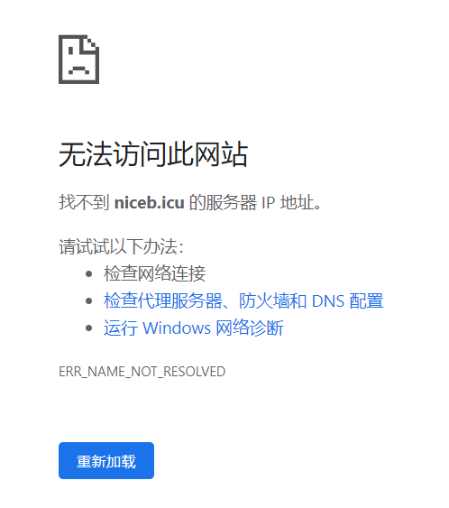

一切的一切都要从qq签名不见了说起
七月 16, 2022
为什么会有这个网页的出现
梦回2022.07.13晚9点←→
偶然间发现我的qq签名不见了
也不知道签名掉了多久了
于是乎开始翻好友的qq签名
直到我看到了个签名https://niceb.icu
打开浏览器果不其然
但也从那时开始有了现在这个网页的计划
搞个破网页几个小时就能上线
那么这篇beginning为什么date: 2022-07-16 23:29:55
2022.07.14-2022.07.16我干啥了
首先，我肯定没有在摸鱼
纠结了3天取什么域名
以下省略3天的极限拉扯
最终有了现在的cinnabar.icu （虽然写到这里的时候我还没去绑域名）
什么是cinnabar
看看封面cover
Cinnabar or cinnabarite, from the Ancient Greek: κιννάβαρι, is the bright scarlet to brick-red form of mercury(II) sulfide. It is the most common source ore for refining elemental mercury, and is the historic source for the brilliant red or scarlet pigment termed vermilion and associated red mercury pigments.
如果还不知道就去看看
我一定会找到
比夜间巡逻更快乐
只有你才能做的工作
——磷叶石
这个小破站是干什么的
// TODO:
查看评论